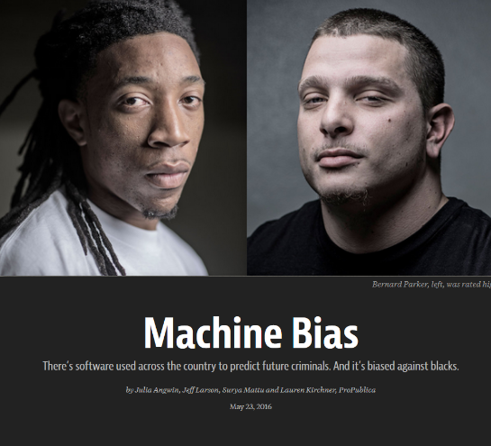
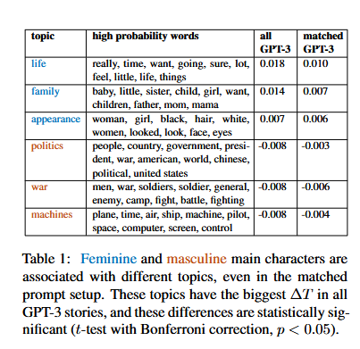
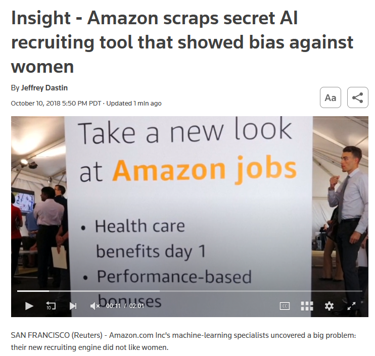
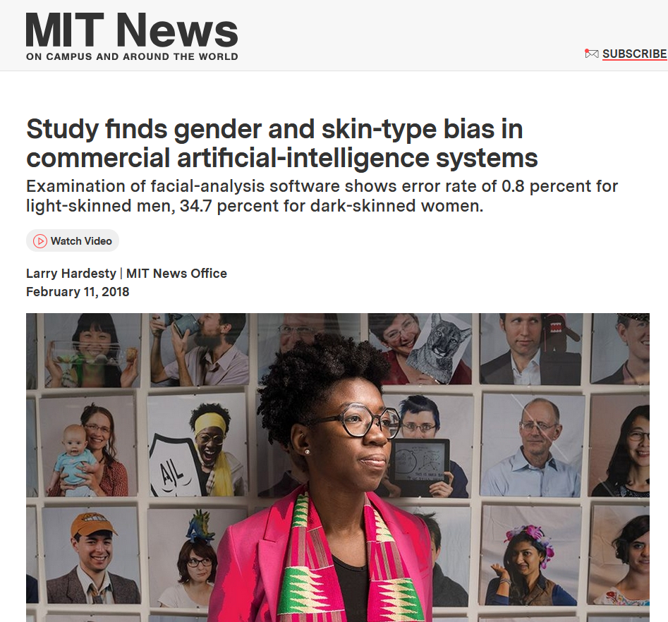
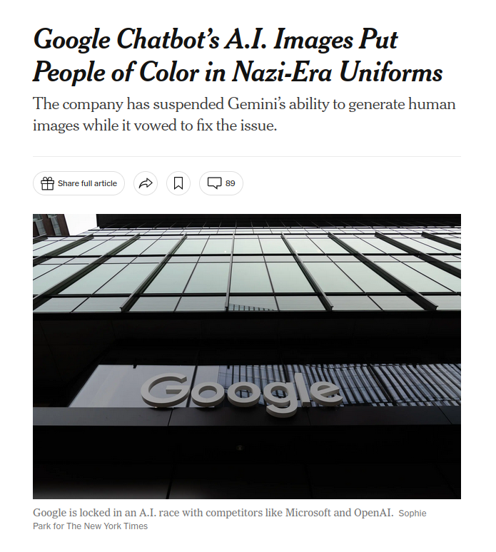

Background
Why does this matter?
When AI generates a "software engineer" or "housekeeper," who does it picture? These defaults shape how people see professional roles — and who feels like they belong in them.
Prior research shows
Image search results for jobs like "programmer" or "engineer" have long underrepresented women and minorities — shaping who imagines those careers as attainable.
The shift to text generation
LLMs are now used to generate personas for product design, hiring simulations, and synthetic datasets — making their demographic defaults matter more than ever.
"Biased" AI is not a new issue. It's an inherited one.

ProPublica, 2016 · Buolamwini
COMPAS Machine Bias
Criminal recidivism algorithms flagged Black defendants as future criminals twice as often as their white counterparts.

GenderShades, 2018 · Joy Buolamwini
Facial Recognition Bias
Facial recognition programs consistently failed when used on marginalized groups.

Amazon Hiring, 2018 · Reuters
AI Recruiting Tool Bias
An internal AI recruiting tool was scrapped after it was found to systematically downgrade resumes from women.
GPT-3 Occupational Bias, 2021 · Lucy & Bamman
GPT-3 Gender Stereotypes
GPT-3 consistently portrayed women in relational or appearance-based terms while depicting men as authoritative and leadership-oriented.

Text-To-Image Surgeons, 2023 · Ai et al.
Surgical Image Generation Bias
Leading text-to-image generators overwhelmingly depicted surgeons as white men, diverging sharply from actual workforce demographics.

New York Times, 2024 · Nick Grant
Gemini Image Generation Fail
A diversity-oriented update caused Gemini to generate historically implausible images of people of color as Nazi soldiers.
Links to all sources in the full paper →